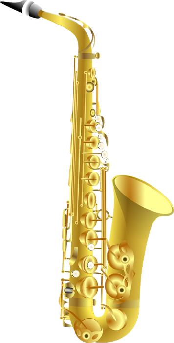

The saxophone, a versatile instrument known for its role in jazz and classical music, has some fascinating facts surrounding its invention and use. Invented by Adolphe Sax, it bridges the gap between woodwind and brass instruments and is unique for being largely designed by a single individual. While commonly made of brass, its sound is produced by a vibrating reed, placing it in the woodwind family. Here are some more fun facts: Single Inventor: The saxophone is notable for being invented by one person, Adolphe Sax, in the 1840s. Brass and Woodwind Hybrid: Despite being a woodwind instrument, the saxophone is typically made of brass and has a conical bore, meaning it gets wider from the mouthpiece to the bell. Diverse Musical Roles: While popular in jazz, the saxophone is also used in classical music, military bands, and even pop music. Family of Sizes: There are multiple sizes of saxophones, with the most common being soprano, alto, tenor, and baritone. Famous Players: Many renowned musicians have mastered the saxophone, including Charlie Parker, John Coltrane, and Coleman Hawkins. Unique Sound: The saxophone's ability to produce a wide range of tones and express diverse emotions makes it a versatile instrument. The saxophone is a single-reed woodwind instrument with a conical brass body. Invented by Adolphe Sax in the 1840s, it's widely used in various music genres. What Are The Different Types of Saxophones? Best Saxophones for Beginners, Intermediate & Advanced ... Alto Saxophone Play Test Reviews & Buyers Guide - bettersax.com 4 Best Saxophones Ever Made | Brendan Mills Saxophonist Blog The 7 Most Unbelievably Outrageous Saxophones In the World Here's a breakdown of key aspects about saxophones: 1. Types: Common: Soprano, Alto, Tenor, and Baritone. Less common: Sopranino, Bass, Contrabass, and others. 2. Pitch and Transposition: Saxophones come in different pitches, impacting their use and sound. Alto and Baritone Saxophones: E♭ instruments. Soprano and Tenor Saxophones: B♭ instruments. 3. Sound Production: The sound originates from the vibrating reed on the mouthpiece. The reed vibrates when air is blown between it and the mouthpiece. The saxophone's body acts as a resonator, amplifying and shaping the sound waves created by the reed. 4. Musical Applications: The saxophone is highly versatile and used in: Classical music (concert bands, chamber music, solo pieces, orchestras) Military bands and marching bands.
